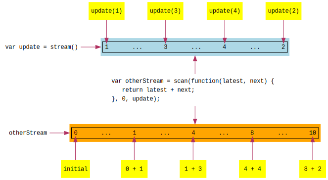

In the previous lesson, 05 - Stream, we learned about streams and
wrote a simple implementation with a map method. Using a stream for update, we were able
to have a better separation between a way for the view to issue updates, and the functions
that use these updates to change the model and re-render the view.
Recall that our Meiosis pattern setup code was:
var model = 0;
var update = stream();
var view = createView(update);
var element = document.getElementById("app");
update.map(function(value) {
model = model + value;
ReactDOM.render(view(model), element)
});
ReactDOM.render(view(model), element);
Notice that when we update the model, model = model + value, we are combining the incoming
value with the current model (here, by addition), and the result becomes the current model for
next time. Let's call this an accumulator.
scanIt turns out that streams have, besides map, another method called scan. In fact, stream
libraries have a number of other methods (also called operators), ranging from a handful to an
overwhelming amount! But, we only need map and scan. Furthermore, we only need to use
them in one place - the Meiosis pattern setup code.
Like map, scan takes a source stream and produces a new stream. Remember that with map,
whenever a new value arrives on the source stream, the function that we passed to map gets
called, and the result is the next value on the new stream.
With scan, instead of passing a function of one parameter, we pass a function of two
parameters. This function is called an accumulator.
When a new value arrives on the source stream, the accumulator function gets called with the latest result that we returned, and the incoming value from the source stream. The result that we return from the accumulator function is the next value on the new stream, and it also becomes the latest result.
Finally, since at first there is no latest result, we pass to scan an initial value, which
becomes starting point for the latest result, and the first value on the new stream.
Let's look at an example. Say we start with an update stream:
var update = stream();
Next, we create an otherStream with scan:
var otherStream = scan(function(latest, next) {
return latest + next;
}, 0, update);
As you can see, we need to pass three parameters to scan:
update to the
latest value.0. So, otherStream will start with a value of 0.update.If we call update(5), the next value on otherStream will be 0 + 5 = 5. If we then call
update(-3), now the latest value is 5, the next value is -3, and the result is 5 + -3 = 2.
The sequence continues, always adding the incoming value to the latest result, as illustrated
below:
As you can certainly guess, this will fit in nicely for our Meiosis pattern setup code.
scanTo implement scan, first we'll improve our stream by adding a feature: optionally passing
in an initial value for the stream:
var stream = function(initial) {
var mapFunctions = [];
var createdStream = function(value) {
for (var i in mapFunctions) {
mapFunctions[i](value);
}
};
createdStream.map = function(mapFunction) {
var newInitial = undefined;
if (initial !== undefined) {
newInitial = mapFunction(initial);
}
var newStream = stream(newInitial);
mapFunctions.push(function(value) {
newStream(mapFunction(value));
});
return newStream;
};
return createdStream;
};
We've added the initial parameter. Then, when map is called, we check whether there was an
initial value for the source stream. If there was, then the initial value for the new stream
is the result of calling the passed in mapFunction.
Now that we can specify an initial value for a stream, we can implement scan:
var scan = function(accumulator, initial, sourceStream) {
var newStream = stream(initial);
var accumulated = initial;
sourceStream.map(function(value) {
accumulated = accumulator(accumulated, value);
newStream(accumulated);
});
return newStream;
};
As we discussed, scan takes an accumulator function, an initial value, and a source stream.
The new stream starts with the initial value. This is also the starting point for the
accumulated value, which is the latest result. Then, we map on the source stream, passing in
a function that takes the incoming value, calls the accumulator function with the latest
accumulated value and the incoming value, and pushes the result onto the new stream.
Now that we have scan, we can improve our Meiosis pattern setup code. Previously, we had:
var model = 0;
var update = stream();
var view = createView(update);
var element = document.getElementById("app");
update.map(function(value) {
model = model + value;
ReactDOM.render(view(model), element)
});
ReactDOM.render(view(model), element)
We can make these improvements:
model variable that we keep reassigning. Instead, our accumulator function
can be cleaner and more self-contained: it can receive the latest model and the next value, and
return the result. It will not refer to variables that are on the outside.scan.scan is a stream of models. We can map on that and re-render the view every
time we have a new model value on the stream.scan produces the initial value on the resulting stream, we no longer have to call
ReactDOM.render initially (this was done at the bottom of our previous setup code). Instead, we
have the initial model on the models stream, and the function that we pass to map will get
called to render the initial view.Here are our changes:
var update = stream();
var view = createView(update);
var models = scan(function(model, value) {
return model + value;
}, 0, update);
var element = document.getElementById("app");
models.map(function(model) {
ReactDOM.render(view(model), element)
});
You can try out the complete example below.
In our example, both the model and the values coming in on the update stream are numbers.
However, scan also works with values of different types.
Keep the model as a number, but change the values that are sent on update to be objects of the
form { oper: "add", value: 1 }. Use this for the +1 button.
Change the -1 button's label to *2, and have its onclick function call
update({ oper: "times", value: 2 }).
Finally, change the accumulator function that is passed to scan so that it looks at the object's
oper and value, and performs the operation on the model accordingly and returns the result.

When you are ready, continue on to 07 - Stream Library.
Meiosis is developed by @foxdonut00 / foxdonut and is released under the MIT license.